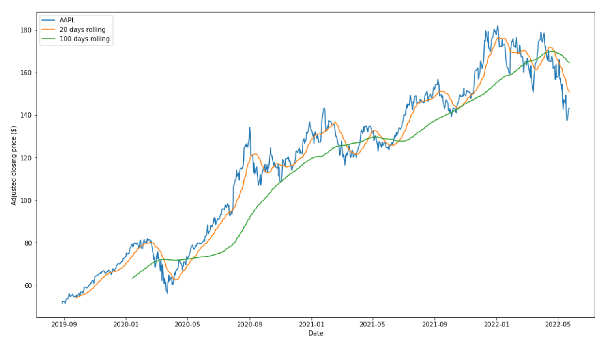
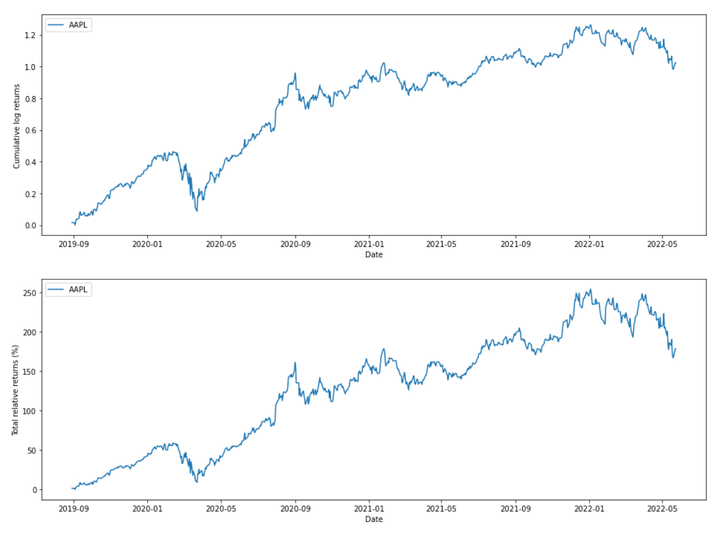
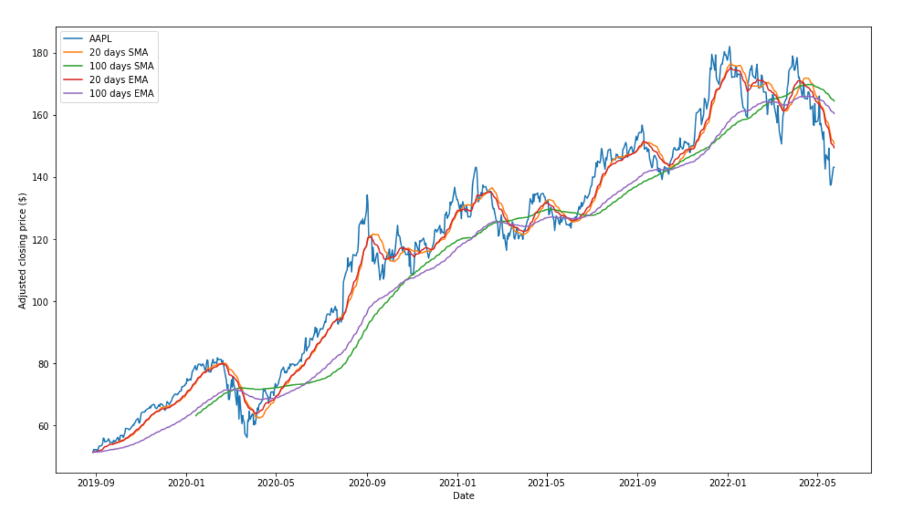
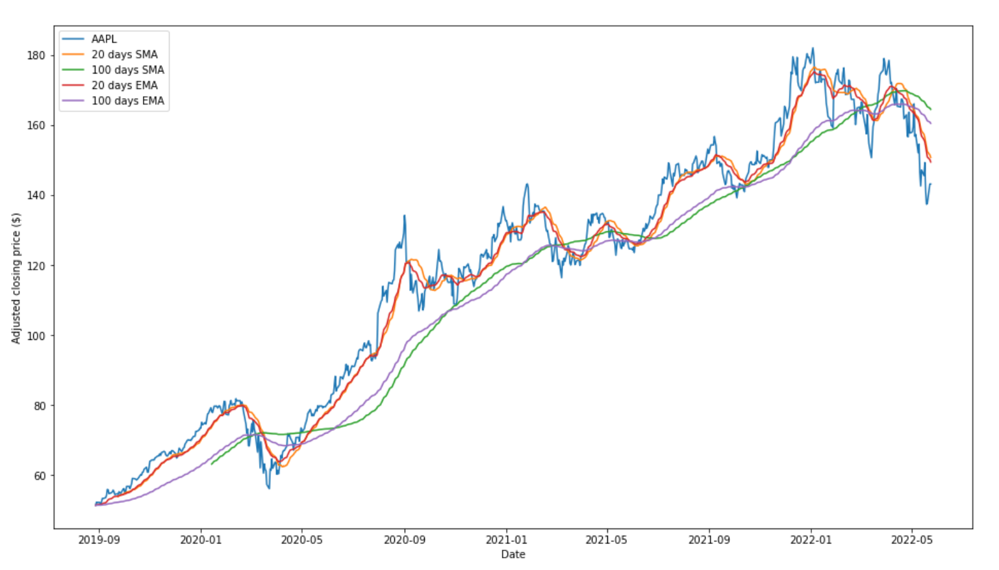

Stock Analysis #
Given the ubiquity of the financial market in our day to day lives, and with my personal interest in stocks I figured that now would be as good of a time as any to learn how to analyze stocks with code.
Given its current ubiquity in the field and with its abundance of libraries that would make learning more about this field, I elected to proceed with Python. One of the main reasons for this choice, outside of what I had just outlined, is that using the Pandas library allows us to quickly and easily gain stock information for a given stock for a period of time.
from pandas_datareader import data
import datetime
today = datetime.date.today()
start_date = str(today - datetime.timedelta(1000))
end_date = str(today)
panel_data = data.DataReader('AAPL', 'yahoo', start_date, end_date)
panel_data
| Date | High | Low | Open | Close | Volume | Adj Close |
|---|---|---|---|---|---|---|
| 2019-08-28 | 51.430000 | 50.830002 | 51.025002 | 51.382500 | 63755200.0 | 50.340683 |
| 2019-08-29 | 52.330002 | 51.665001 | 52.125000 | 52.252499 | 83962000.0 | 51.193043 |
| 2019-08-30 | 52.612499 | 51.799999 | 52.540001 | 52.185001 | 84573600.0 | 51.126915 |
| 2019-09-03 | 51.744999 | 51.055000 | 51.607498 | 51.424999 | 80092000.0 | 50.382324 |
| 2019-09-04 | 52.369999 | 51.830002 | 52.097500 | 52.297501 | 76752400.0 | 51.237133 |
| … | … | … | … | … | … | … |
| 2022-05-17 | 149.770004 | 146.679993 | 148.860001 | 149.240005 | 78336300.0 | 149.240005 |
| 2022-05-18 | 147.360001 | 139.899994 | 146.850006 | 140.820007 | 109742900.0 | 140.820007 |
| 2022-05-19 | 141.660004 | 136.600006 | 139.880005 | 137.350006 | 136095600.0 | 137.350006 |
| 2022-05-20 | 140.699997 | 132.610001 | 139.089996 | 137.589996 | 137194600.0 | 137.589996 |
| 2022-05-23 | 143.259995 | 137.649994 | 137.789993 | 143.110001 | 116301300.0 | 143.110001 |
With this data gained, we can quickly single out the Close column such that we can start visualizing our stock data. Sometimes when looking at stock data, or when visualizing it, we may want to smooth out the data so that we can avoid shifted perceptions due to temporary changes in stock valuation. This may offer us a more comprehensive look at our data, that is not skewed by any minor blip.
We can change the duration of the rolling average, based upon how much smoothing we may want. For example, we could have a shorter smoothing of just 20 days, or longer smoothing of 100 days.
Before I did that, though, I first had to reindex my data. Because financial data is collected on weekdays, I had to account for that fact by adding in all of the non-included days in our data between the start and end dates we provided. We can fill these empty spots in with na and then we can reindex those to copy the previously entered piece of data into that box.
import pandas as pd
import matplotlib.pyplot as plt
close = panel_data['Close']
all_weekdays = pd.date_range(start=start_date, end=end_date, freq='B')
close = close.reindex(all_weekdays)
close = close.fillna(method='ffill')
short_rolling_msft = close.rolling(window=20).mean()
long_rolling_msft = close.rolling(window=100).mean()
fig, ax = plt.subplots(figsize=(16,9))
ax.plot(close.index, close, label='AAPL')
ax.plot(short_rolling_msft.index, short_rolling_msft, label='20 days rolling')
ax.plot(long_rolling_msft.index, long_rolling_msft, label='100 days rolling')
ax.set_xlabel('Date')
ax.set_ylabel('Adjusted closing price ($)')
ax.legend()

When developing a stock strategy, or trading strategy, we will want to analyze the change in the returns of our stock over time. One way to do this would be to look at relative returns. A relative return is the amount of return our stock will get after some timeline relative to some benchmark return. The formula for relative returns looks as follows.
\[ r_{relative}(t) = \frac{p(t) - p(t - 1)}{p(t - 1)} \]Another way to do this would be through logarithmic returns, the formula which is as follows.
\[ r(t) = log(\frac{p(t)}{p(t - 1)}) \]There are many reasons why we may wish to use a log return, rather than relative returns, some of which would be that they capture the compounding effect. When we consider that financial investments such as these are compounded over many points in time, we may find this compounding important to capture in our data, which make log returns more appealing in their use.
import numpy as np
log_returns = np.log(close).diff()
fig, (ax1, ax2) = plt.subplots(2, 1, figsize=(16, 12))
ax1.plot(log_returns.index, log_returns.cumsum(), label='AAPL')
ax1.set_ylabel('Cumulative log returns')
ax1.set_xlabel('Date')
ax1.legend(loc='upper left')
ax2.plot(log_returns.index, 100*(np.exp(log_returns.cumsum()) - 1), label='AAPL')
ax2.set_ylabel('Total relative returns (%)')
ax2.set_xlabel('Date')
ax2.legend(loc='upper left')
plt.show()

While analyzing our data visually is indeed very useful, it is also helpful to analyze our data quantitatively. Here, we can also use some Python to calculate the returns between our start and end date and we can also use this to determine an average return across each year (or month if we wanted to do that as well).
days = 1000
years = days / 365
final_returns = 100*(np.exp(log_returns.cumsum()) - 1)[-1]
print('Return from start date to end date is: ' + '{:.2f}'.format(final_returns) + '%')
final_returns_per_year = final_returns / years
print('Average yearly return: ' + '{:.2f}'.format(final_returns_per_year) + '%')
Return from start date to end date is: 178.52%
Average yearly return: 65.16%
When we previously looked at our rolling averages of stock returns, we were using a method known as the “simple moving average” (SMA). This method is evidently fairly easy to create, and shows us the general trend of our stock movement. Another method is known as the “exponential moving average” (EMA). This method of moving average places more importance/weight on more recent data points, so it accounts more strongly for recent changes in price.
With the EMA, we can also do it across a time period, perhaps 20 or even 100 days. Below I have graphed the regular stock price and both the EMA and SMA across 20 and 100 days, so as to easily see their differences.
ema_short = close.ewm(span = 20, adjust=False).mean()
ema_long = close.ewm(span = 100, adjust=False).mean()
fig, ax = plt.subplots(figsize=(16,9))
ax.plot(close.index, close, label='AAPL')
ax.plot(short_rolling_msft.index, short_rolling_msft, label='20 days SMA')
ax.plot(long_rolling_msft.index, long_rolling_msft, label='100 days SMA')
ax.plot(ema_short.index, ema_short, label="20 days EMA")
ax.plot(ema_long.index, ema_long, label="100 days EMA")
ax.set_xlabel('Date')
ax.set_ylabel('Adjusted closing price ($)')
ax.legend()

Before making any investment it is critical to know the volatility of a stock, as it can give us insight into how risky the stock may be as an investment. Volatility measures how dispersed, or spread out, the returns for our stock is. Thus, the greater the volatility is, the riskier of an investment it would be. It can be calculated as the standard deviation between returns of the stock. Below you can see the measured stock volatility based upon the log returns of the stock price and its frequency.
ema_short = close.ewm(span = 20, adjust=False).mean()
ema_long = close.ewm(span = 100, adjust=False).mean()
fig, ax = plt.subplots(figsize=(16,9))
ax.plot(close.index, close, label='AAPL')
ax.plot(short_rolling_msft.index, short_rolling_msft, label='20 days SMA')
ax.plot(long_rolling_msft.index, long_rolling_msft, label='100 days SMA')
ax.plot(ema_short.index, ema_short, label="20 days EMA")
ax.plot(ema_long.index, ema_long, label="100 days EMA")
ax.set_xlabel('Date')
ax.set_ylabel('Adjusted closing price ($)')
ax.legend()

There is a lot more analysis that can and should be done to better understand investments, in this case stock investments, so I intend to come back to this topic in the future to learn about more methods for financial analysis.